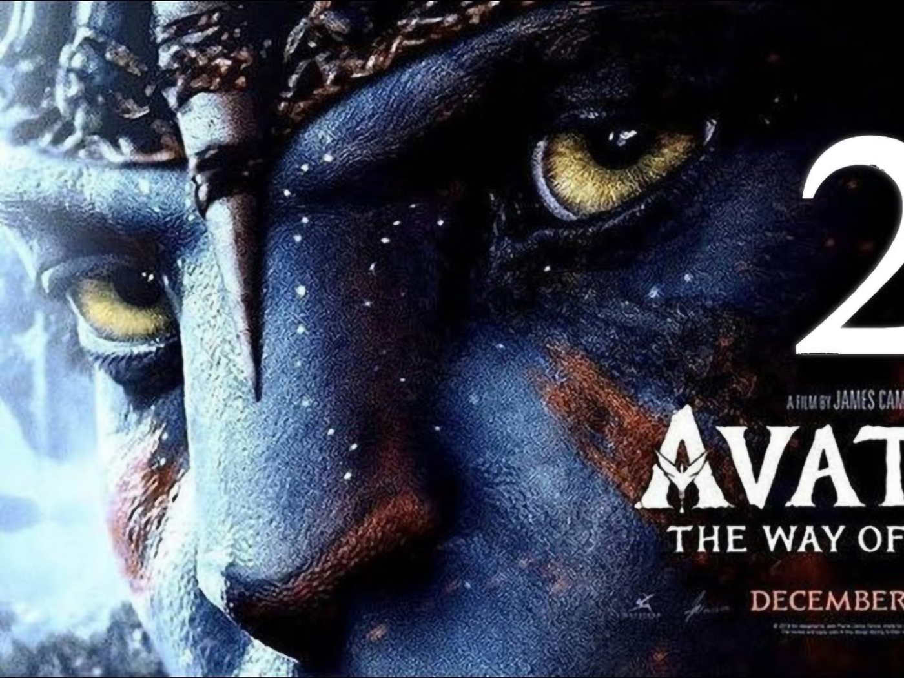
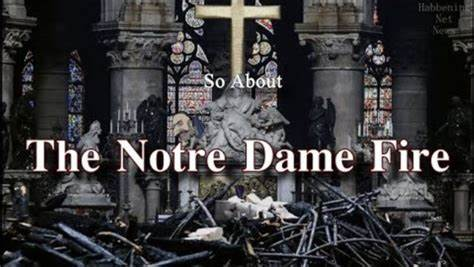

Movies
-

Title: AVATAR
Credits: Jake Sully lives with his newfound family formed on the planet of Pandora. Once a familiar threat returns to finish what was previously started, Jake must work with Neytiri and the army of the Na'vi race to protect their planet. "This film has not yet been classified. We anticipate an above 13 classification"
PG: TBA(13) -

Title: NOTRE-DAME ON FIRE
Credits: Notre-Dame on Fire (French: Notre-Dame brûle) is a 2022 disaster film based on the Notre-Dame de Paris fire that occurred on 15 April 2019. The film is directed by multi-award winner Jean-Jacques Annaud from a script written by Annaud and Thomas Bidegain.
PG: 10-12 -

Title: BLACK PANTHER: WAKANDA FOREVER
Credits: The people of Wakanda fight to protect their home from intervening world powers as they mourn the death of King T'Challa.
PG: 10-12 -

Title: BIG TRIP 2
Credits: It has been a year since Mic Mic and Oscar returned from their incredible adventure. And now, after a diabolical plan by Vulture to sabotage the delivery of the Grizzly cub to his opponent in the American presidential elections, Mic Mic, Oscar, Panda teenager and Stork set off on another great adventure as they ride a zeppelin to return little Grizzly to its' rightful parents, save the American elections and the whole continent from the erupting volcano.
PG: 7-9 -

Title: MR BONES 3: SON OF BONES
Credits: Synopsis: The storyline of Mr. Bones 3, Son of Bones begins at the turn of the last century, when we witness (flashback) the burying of the Kruger millions by two Boer soldiers, who then kill each other through idiotic greed, leaving the Kruger millions hidden in a graveyard in Kuvukiland. Now, in the present, a scrawny businessman named Alvin (Moonsammy) and his Texan engineer partner named Jack (Janks), together with their beautiful guide, Gabrielle (Anstey) are plotting to mine for oil in the...
PG: 10-12